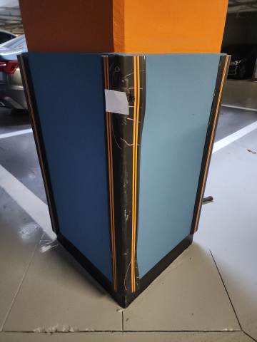
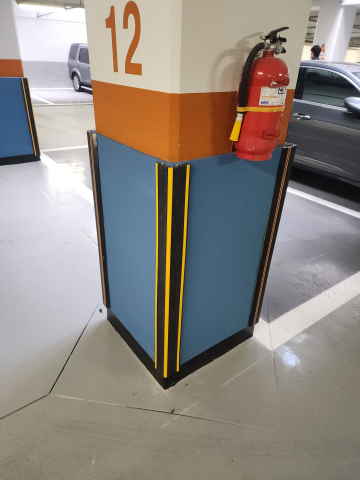
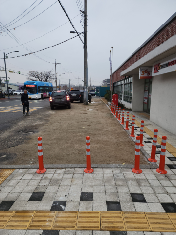
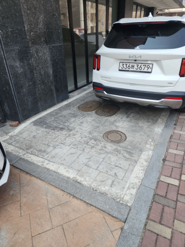
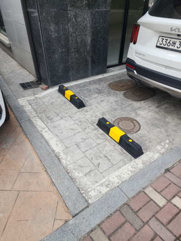

1개·소량 설치 상담
볼라드 한 개부터 카스토퍼 부분 교체까지.필요한 수량이 적어도 부담 없이 문의해 주세요.
볼라드, 논슬립패드, 카스토퍼, 반사경 등 주차장과 건물 주변의 다양한 시설물을 설치하고 보수합니다.필요한 작업과 현장 상황을 알려주세요. 홈페이지에 없는 작업도 편하게 문의해 주시면 상담해 드립니다.
제품을 설치할 자리와 바닥 상태, 사용 목적에 맞춰 필요한 작업만 진행합니다.
볼라드 한 개부터 카스토퍼 부분 교체까지.필요한 수량이 적어도 부담 없이 문의해 주세요.
기존 시설물이 일부만 파손됐다면 필요한 부분부터 교체하거나 보수해 드립니다.
평일 작업이 어려운 현장도 희망 시간을 알려주세요.원하시는 날짜를 알려주시면 현장 일정에 맞춰 상담해 드립니다.
새로 설치하거나 파손된 부분만 교체하는 작업까지 다양하게 맡겨 주세요.
 볼라드
볼라드차량 진입을 제한하거나 보행 공간을 구분합니다.볼라드 형태와 바닥 상태에 맞는 방식으로 설치합니다.
제품 종류·시공 방법 자세히 보기 → 논슬립패드
논슬립패드계단에서 미끄러질 위험을 줄입니다.계단 재질에 맞춰 설치하고 손상된 구간은 부분 교체합니다.
제품 종류·시공 방법 자세히 보기 → 반사경
반사경출입구와 모퉁이의 사각지대를 줄여 사고 예방에 도움을 줍니다.PC·스텐 반사경의 재질과 크기를 현장에 맞게 선택합니다.
제품 종류·시공 방법 자세히 보기 → 아스콘부분보수
아스콘부분보수포트홀이나 갈라진 아스팔트를 필요한 부분만 보수합니다.파손된 범위에 맞춰 필요한 부분만 보수합니다.
제품 종류·시공 방법 자세히 보기 → 주차금지봉
주차금지봉지정 주차면의 무단주차를 방지하는 시설물입니다.잠금장치가 있는 접이식 주차금지봉을 바닥에 단단히 설치합니다.
제품 종류·시공 방법 자세히 보기 → 차량진입판
차량진입판높은 턱을 넘을 때 차량 하부가 닿는 문제를 줄여줍니다.단차와 차량 무게에 맞춰 경사판을 선택합니다.
제품 종류·시공 방법 자세히 보기 → 카스토퍼
카스토퍼주차 위치를 알려 벽이나 시설물과의 충돌 위험을 줄입니다.합성고무·친환경·스틸 카스토퍼를 설치 장소에 맞춰 시공합니다.
제품 종류·시공 방법 자세히 보기 → 코너보호대
코너보호대주차장 기둥과 벽 모서리를 충격으로부터 보호합니다.재질과 설치 높이를 살펴 부분 교체도 상담합니다.
제품 종류·시공 방법 자세히 보기 → 차선규제봉
차선규제봉차량 이동 방향을 쉽게 알아볼 수 있도록 차선을 구분합니다.차량 동선에 맞춰 높이와 간격을 정하고, 파손된 봉은 필요한 수량만 교체합니다.
제품 종류·시공 방법 자세히 보기 → 표지판설치
표지판설치주차 및 안전 표지판을 잘 보이는 곳에 설치합니다.벽부형이나 지주형으로 설치하며, 지주형은 바닥에 맞는 방식으로 단단히 고정합니다.
제품 종류·시공 방법 자세히 보기 →10가지 시공항목의 작업 전·후 사진을 한눈에 비교해 보세요.제품 종류와 설치 방법은 각 시공항목에서 자세히 살펴볼 수 있습니다.
차량이 드나드는 구역에 맞춰 볼라드를 튼튼하게 고정합니다.


계단 재질에 맞는 논슬립패드를 미끄러지기 쉬운 구간에 설치합니다.


운전자에게 잘 보이는 각도와 위치에 반사경을 설치합니다.


출입구 턱 높이와 차량 진입 방향에 맞게 경사판을 설치합니다.


파손된 아스팔트의 깊이와 범위에 맞춰 부분 보수합니다.


차량이 닿기 쉬운 기둥과 벽 모서리에 코너보호대를 설치합니다.


표지판을 알아보기 쉬운 높이와 방향으로 설치합니다.


차량이 움직이는 방향에 맞춰 차선규제봉의 간격을 정합니다.


주차면과 차량 크기에 맞춰 카스토퍼를 단단히 고정합니다.


지정 주차면에 맞는 위치와 잠금 방식으로 설치합니다.


현장 전체 모습과 시공할 위치, 제품 상태가 보이는 사진을 보내주시면 상담에 도움이 됩니다.
주소와 주차장·계단·진입로 등 작업할 곳을 알려주세요.
수량과 현장 전체 모습, 파손 부위 사진을 보내주세요.
평일·주말·야간 중 필요한 날짜가 있다면 함께 알려주세요.
적은 수량도 상담할 수 있습니다.한 개만 필요한 작업도 환영합니다. 설치할 곳의 사진과 필요한 수량을 보내주세요.
제품이 파손됐거나 고정이 느슨해졌다면 필요한 부분부터 철거하거나 교체해 드립니다.
현장 전체, 작업 위치, 기존 제품의 고정부와 파손 부위를 각각 찍어주시면 도움이 됩니다.
주말이나 야간에 작업이 필요하다면 원하시는 날짜와 위치를 알려주세요. 일정은 상담하면서 맞춰보겠습니다.